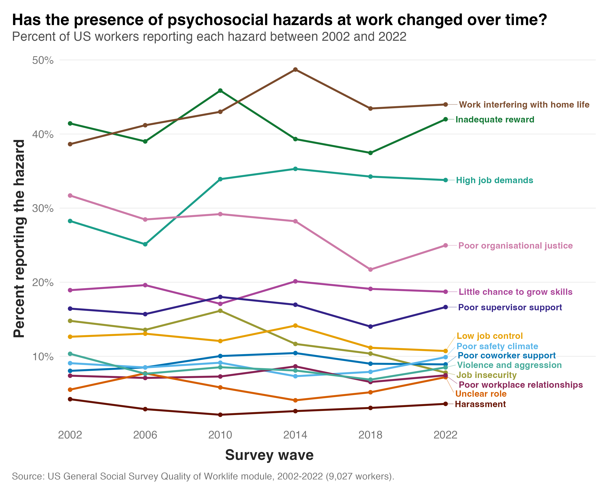

Australian workplaces have spent the past few years getting serious about psychosocial hazards. But for all that activity, good data on whether these hazards are actually becoming more common are still hard to come by.
Interestingly, the US General Social Survey has tracked them consistently. Its Quality of Worklife module has run every four years since 2002, asking people to report the presence or absence of 14 hazards.
The figure below shows the trends in these hazards over time.

Here's what the data suggest:
1) Most of the hazards have not moved. Ten of the 14 finished 2022 within two percentage points of where they started in 2002. Among these is one of the most common hazards. About four in ten workers say they are paid less than they deserve, and that has been true in every survey since 2002.
2) Job insecurity and poor organisational justice both fell. Insecurity dropped from 14.8 per cent to 7.8 per cent, having peaked at 16.1 per cent in 2010 in the wake of the financial crisis. The share saying promotions are handled unfairly fell from 31.7 per cent to 25.0 per cent.
3) But job demands rose. The share saying they have too much work to do it well went from 28.3 per cent to 33.8 per cent, almost all of it in a single step between the 2006 and 2010 surveys. Work interfering with home life rose too, from 38.6 per cent to 44.0 per cent, on a trend of about 2.7 percentage points per decade.
These findings raise some interesting questions for the Australian context. Australian workers compensation claims for mental health conditions grew 165 per cent between 2015 and 2024. If the underlying stressors in Australia have been as stable as they have been in the US, then what's behind the increase in claims? Fewer barriers to lodging this type of claim? Or is the psychosocial risk climate in Australian workplaces genuinely different from what these data say about the US?